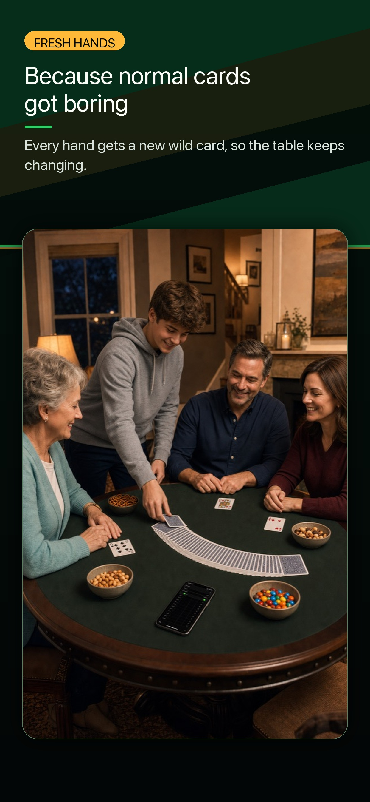
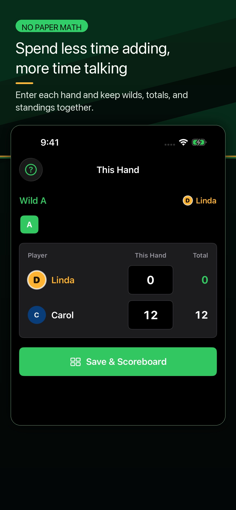
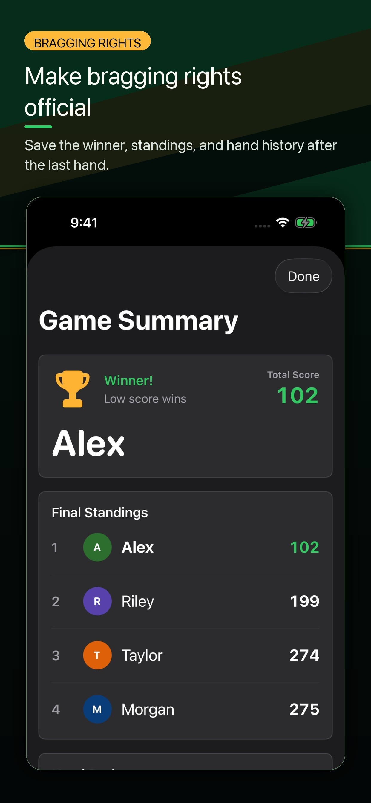
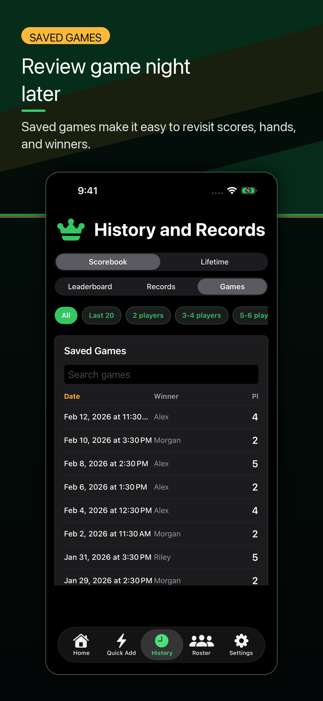
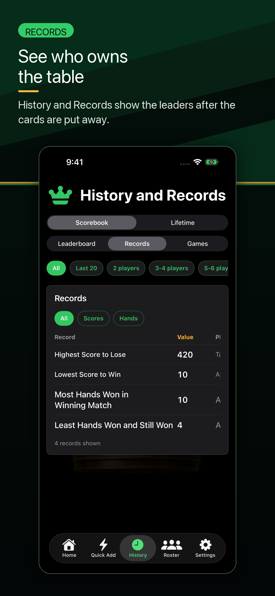
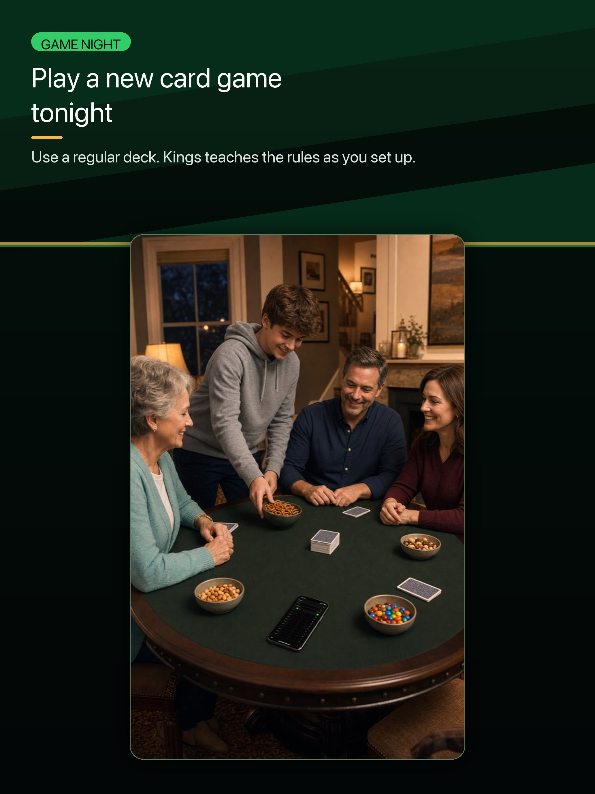
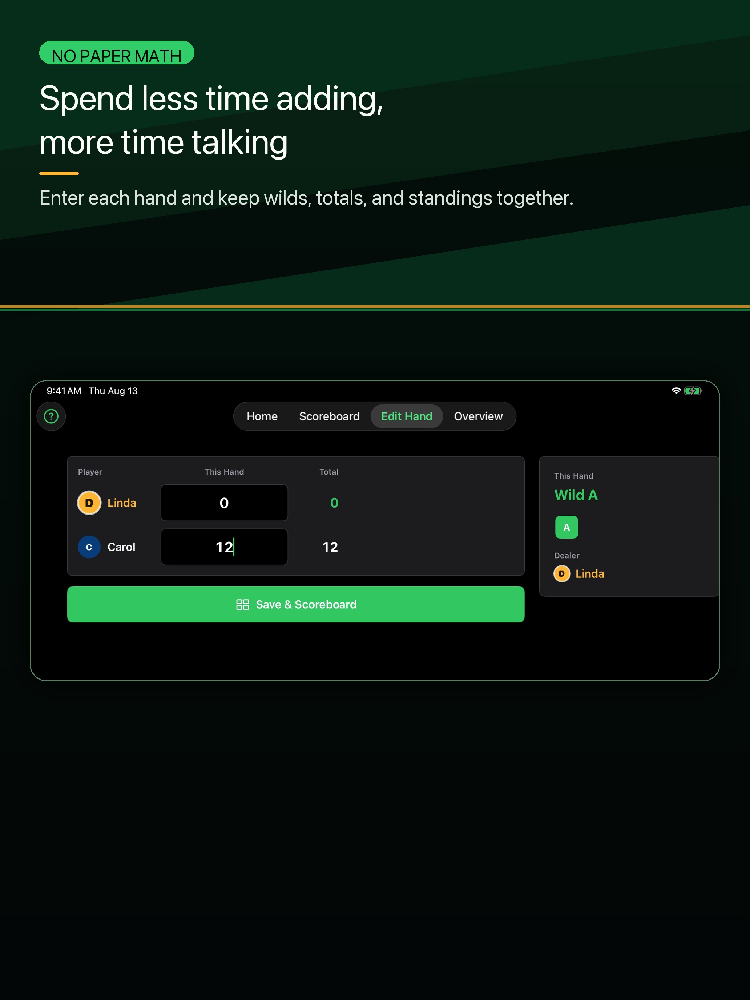
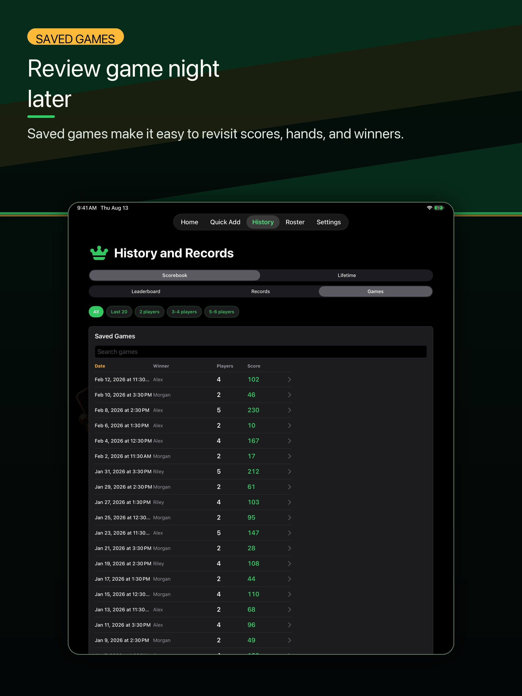
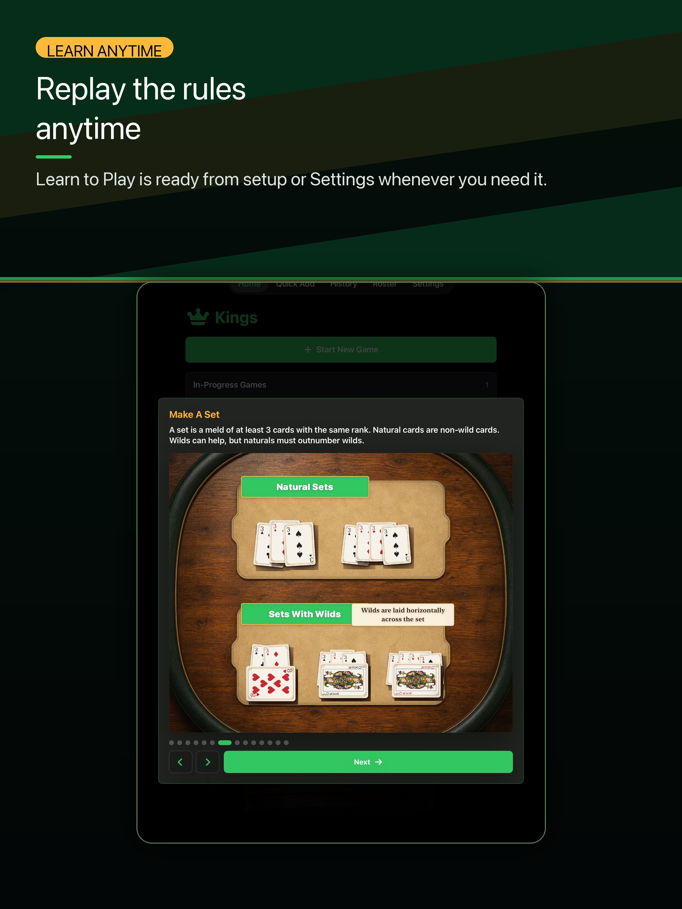

Gallery
See the current App Store screenshots before you download. Kings supports iPhone and iPad, with Learn To Play, scoring, History, Records, and saved summaries.
Gallery screenshots may show demo names and demo scores. Do not treat the scores shown here as real customer results. These screenshots come from the approved Kings 1.3.0 App Store screenshot set.
iPhone Screenshots









iPad Screenshots



